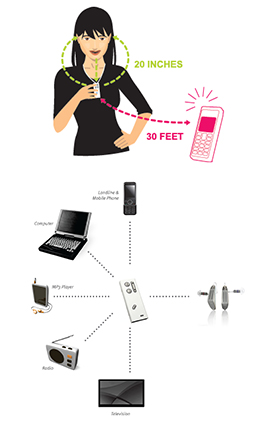

Hearing Aids

Hearing aid technology has come a long way in recent years. Anti-whistling features, miniaturization, wireless connectivity between hearing aids, and wireless connections to personal and home electronics are just a few of the new features.
Many people are reluctant to use hearing aids. Some are concerned about appearance. Others associate them with a stereotype of aging. Others still have negative information about the effectiveness of hearings aids. What people need to know is that hearing aids have become more sophisticated and are more stylish in design. The models available today are much more capable and effective than those of yesterday. There is a vast array of hearing aids to choose from.
Orangeville Hearing Clinic and Alliston Audiology are there to work with you through this process.
Orangeville Hearing Clinic and Alliston Audiology consider your needs by considering all manufacturer brands. This comprehensive view opens up a world of options for you.
Types of Hearing Aids:
All hearing aids contain: a microphone to pick up sounds, an amplifier to make sounds louder, a receiver to send the louder signals to the eardrum and a battery to act as the power source. There are five types of hearing aids:
Hearing Aid Techonology:
Hearing aid technology continues to improve at a rapid pace. A few of the latest improvements include:
- ANTI-FEEDBACK FEATURES. These features reduce or stop the "whistling" of the hearing aid to allow for more comfort and easier telephone use.
- EXTENDED HIGH-FREQUENCIES. This improvement allows you to hear more high-frequency consonants such as the sound "S" and "SH".
- HEARING AID WIFI. Hearing aids share information with each other via a wireless connection in order work together and improve the sound for you.
- MINIATURIZATION. Hearing aids pack more and more of these features into smaller and smaller packages too!
- CONNECT TO YOUR WORLD. Hearing aids form connections to mobile phones, home phones, TVs, computers, tablets, remote microphones and much more. And the list keeps getting bigger!